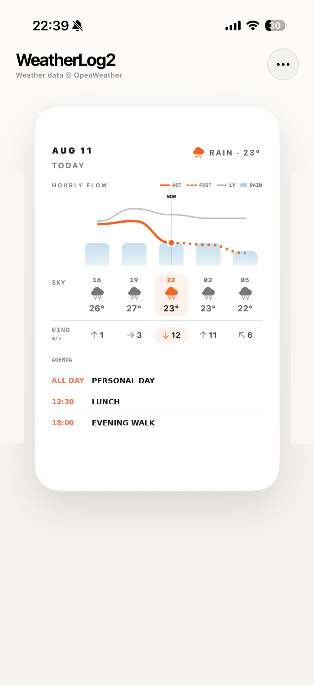
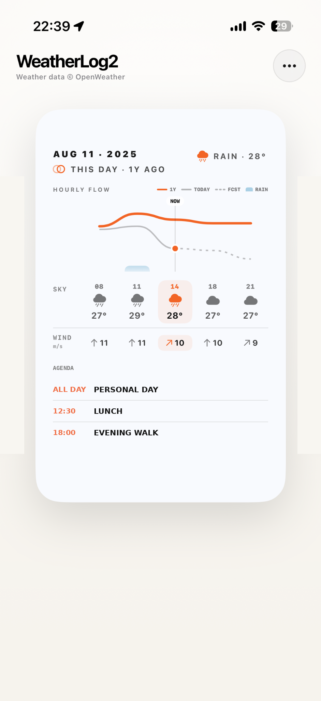
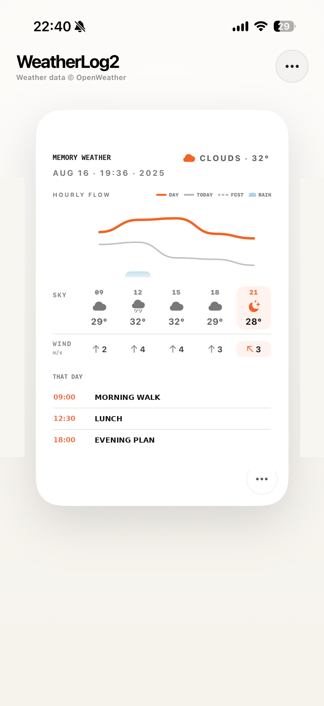

OpenWeather
ユーザー自身のAPIキー
天気機能の利用には、OpenWeather APIキーとOne Call API 3.0の有効化が必要です。料金・利用枠・上限はOpenWeatherの最新情報をご確認ください。
Concept
今日の空と、1年前の同じ日。写真・気温・風・予定を重ねることで、単なる天気予報ではなく、その日の空気まで振り返れる体験を目指しました。
Today
今日の気温、雨、風、時間ごとの変化と予定をひとつのカードに。表面の写真と、裏面の詳しい天気をめくって確認できます。

1Y
1年前の同じ日と今日を重ねて、気温や空の流れを比較。その日の写真や予定と一緒に、季節の違いを振り返れます。

Seasonal Memories
写真ライブラリの中から季節の記憶を見つけ、撮影日の天気や予定へつなげます。写真とカレンダーの内容は端末内で処理されます。

OpenWeather
天気機能の利用には、OpenWeather APIキーとOne Call API 3.0の有効化が必要です。料金・利用枠・上限はOpenWeatherの最新情報をご確認ください。
サポート
設定方法や不具合については、サポートページをご確認ください。APIキーはメールで送信しないでください。
プライバシー
写真やカレンダーの内容は端末内で処理します。詳しくはプライバシーポリシーをご確認ください。